NATIONAL（ ナショナル）/TECHNICS（テクニクス）/PANASONIC（ パナソニック）
総合家電メーカーである旧 松下電器産業のオーディオブランド。1918年に松下幸之助 により設立・創業。1927年より「ナショナル」の商号を使用してきた。オーディオに関しては1970年頃から「テクニクス」ブランドを使用。現在、社名にもなっている「パナソニック」は元もとは輸出用のブランドだったが、1980年代末頃より、国内でも普及価格帯の製品に対して使いはじめ、やがて高級オーディオの衰退とともにメインのブランドとなり、「テクニクス」のほうがＤＪ用機器等の局所的なブランドとなった。
アナログディスク関連では、ダイレクトドライブ式のターンテーブルが有名。その為アームにも凝った製品が多い。カートリッジについてはMM型を中心に開発を進めたメーカーであり、1970年代後半以降もMM型の高級機を出し続けた。MC型も発売したが、MM型ほど熱心ではなかった。またT4P規格はこの会社の提唱によるもの。
1990年代初頭に純粋なオーディオ製品としては、アナログ関連から撤退したため、PANASONIC（パナソニック）名義の製品はほとんどない。逆にＤＪ用機器等のブランドとなった「テクニクス」名義ではその後もプレイヤーの販売が続いており、その付属品としてシェルやカートリッジも細々とだが販売されていた。2010年に一度、完全撤退が公表されたが、2014年に高級オーディオブランドとして復活した。
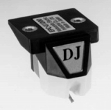
（2001年に発売されたDJ用カートリッジ U1200)また本サイトの収録範囲では、カートリッジ、アーム等で「ナショナル」ブランドの製品は無い。その他のクリーナー等BHの型番）が「ナショナル」製品だった。
�T.カートリッジ
半導体型やMC型も手がけたが、国内でもっともMM型に力を入れたブランドの一つであった。
*テクニクスのカートリッジの名称は、資料により「EPC」がつけたものとそうでないものが混在するので、当サイトではすべて「EPC」をはずして表記します。
1.半導体型カートリッジ
このブランドは1970年代中盤まで半導体型をラインナップに残していた。4チャンネルステレオ対応機。
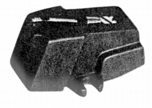 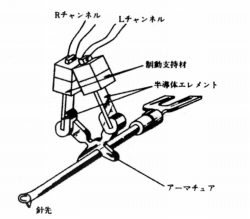
（1960年代後半の95SSとその構造図）
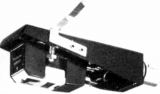
2.MM型カートリッジ
�@205系
テクニクスを代表するMM型の中核機種。最初のモデルは200Cで、廉価版が210Cだった。やがて205Cが登場し、以降「MK4」まで改良が続けられた。405Cは「CD-4」対応機。
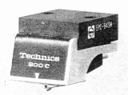
(200C)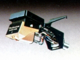
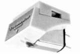
(左 205C-�UH 右 405C)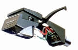
(207C)�A100系
シェル一体型によるテクニクスの最高級機種。最初のモデルは100Cで、廉価版が101C。以降「MK4」まで改良が続けられた。
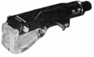
(100C)100C 101C 100C MK2 100C MK3 100C MK4
�Bその他のモデル 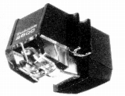
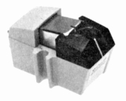
3.MC型カートリッジ
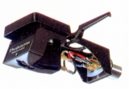
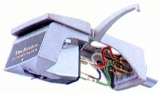
(左 300MC 右 305MC MK2)4.T4Pタイプ
この規格はテクニクスが提案した規格だった。リニアトラッキング・アームに直結しリード線不要、針圧・オーバハングの調節不要をうたっていた。
�@MM型
規格の提唱元だけに、自社の人気機種205系や100系の技術を引き継ぐモデルも投入した。
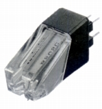
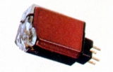
(左 P202C 右 P205C MK3)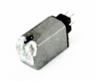
(P100C MK4)�AMC型
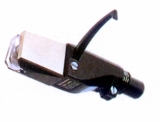
(310MC）
�U.昇圧トランス・ヘッドアンプ
MM型が主力のメーカーであったため、ブランド規模からすれば製品数は少ない。
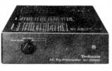
(SU-300MC)（ヘッドアンプ） SU-300MC
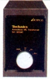
(SH-305MC)（トランス) SH-305MC
�V.トーンアーム
ダイレクトドライブのフォノモーターの名門であり、アームはかなり力を入れていた。
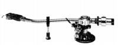
(EPA-99)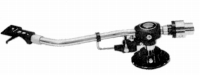
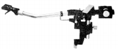
(左 EPA-101S 右 EPA-121T)EPA-101S/L/T EPA-121S/L/T EPA-102L/T
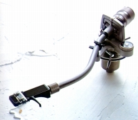
(EPA-100)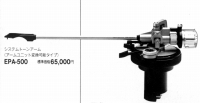
(EPA-500)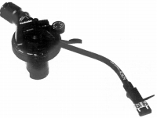
(EPA-100MK2)�W.その他
�@ヘッドシェル
�Aその他
クリーナー4点と針圧計、レコード除電器など。